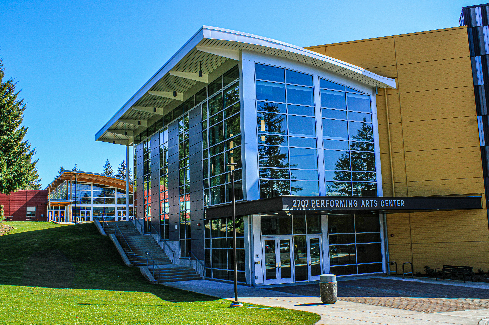

This website is for students wanting to pursue cooking as their future career and aren't getting the amount of cooking/baking experience that they would like. This also applies to the students taking food tech that might want to cook more due to the multiple theory classes food tech makes you take. This website will let students and their caregivers see if they want to join the club and learn more hands-on cooking where they can learn new techniques and different dishes. This helps the student's wanting to pursue cooking by giving them more experience to see if they really want to choose that career path.

Dates: Every Wednesday. Address: Hamilton Girl's High School. times: 2:30 to 3:30. Number: 0000000000.